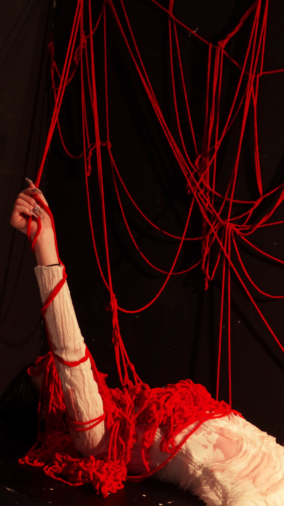
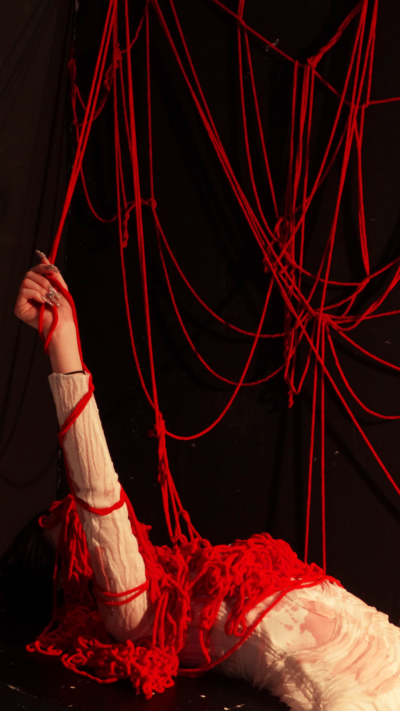
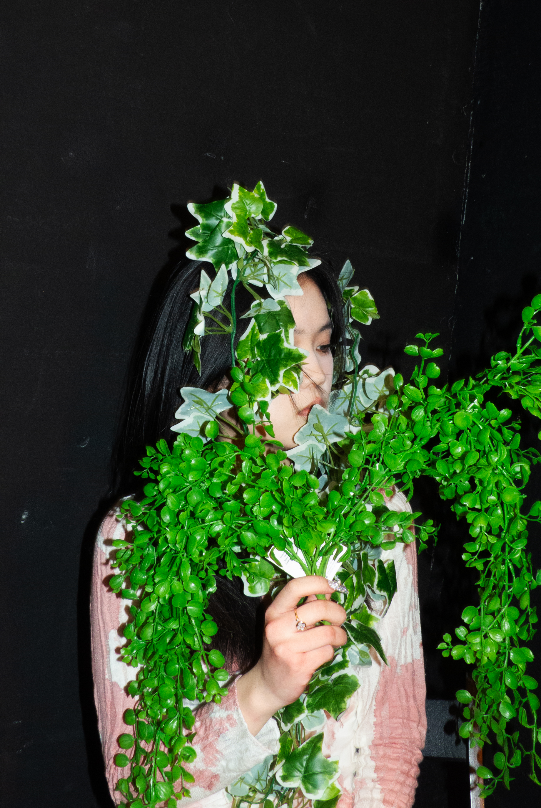
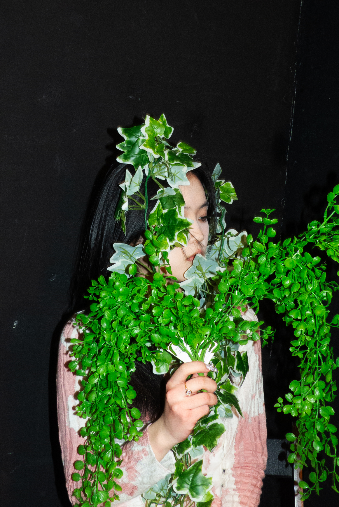

Xtreme BEAUTY SHOOTING
TOPIC

Extreme beauty
PROJECT
PHOTOGRAPHY
BRIEF
PHOTOSHOOTING SERIES
Beautiful but Xtreme
Beauty is a complex matter because it is subjective to the eyes of the observer. Also there is a clear distinction between conventional and unconventional beauty. This series of photographs wants to challenge and reinvent traditional beauty standards by creating unusual associations between contratsing elements that once combined create a fresh sense of beauty.
In the first series of images the purity and tenderness of an asian model is contrasted by the strong red color of blood drops and her instinct to kill. In the second one, a woman is held hostage by ropes which remind of instestines that wave around the girl's face and body. The last couple feautures a woman who grows leaves on her body, entering a symbiotic relationship with the plant.


 

 
